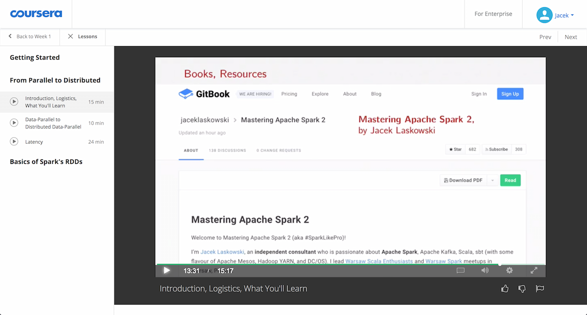

Spark SQL / Scala Workshop 5 Days
@jaceklaskowski / StackOverflow / GitHub
Books: Mastering Apache Spark / Spark Structured Streaming
- Jacek Laskowski is an independent consultant
- Specializing in Spark, Kafka, Mesos, DC/OS, Scala
- Among contributors to Spark 2.1, Spark 2.0 (since 1.6.0)
- Contact me at jacek@japila.pl or follow me on twitter at @JacekLaskowski <-- and learn more Spark!
- Delivering Development Services | Consulting | Training
- Leader of Warsaw Scala Enthusiasts and Warsaw Apache Spark
- Java Champion
https://github.com/jaceklaskowski

https://bit.ly/mastering-apache-spark

Ranked #90 in Spark contributors

http://stackoverflow.com/users/1305344/jacek-laskowski

https://twitter.com/jaceklaskowski

Goal
Developing hands-on experience in
Spark SQL and Scala (and Structured Streaming),
to exploit massive datasets
for advanced analytics and data-oriented decision making
Mastering Apache Spark notebook featured in the Big Data course at Coursera!

Prerequisities (1 of 3)
- Some programming experience using modern programming language, e.g. Scala, Python, Java, F#
Prerequisities (2 of 3)
- Installed
- Java Platform, Standard Edition (Java SE) 8
- IntelliJ IDEA Community Edition with Scala plugin
- sbt
- PostgreSQL
- Apache Kafka
- Apache Hadoop 2.7.3 (not
Hadoop 3.0.0-alpha2)
Prerequisities (3 of 3)
- Downloaded